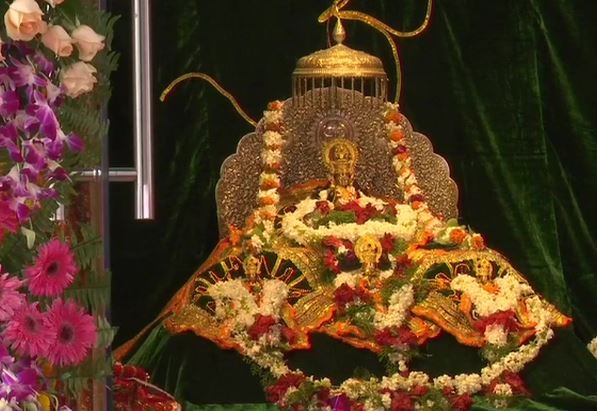

श्री राम पधार रहे है
राठौड़ परिवार की और से राम लला प्राण प्रतिष्ठा की की हार्दिक शुभकामनाएं!
श्रीराम, हिन्दू धर्म के आदर्श पुरुष, अवतारों में एक, रामायण के मुख्य पात्र और धर्मिक ग्रंथ। उनके जीवनचरित्र नैतिकता, सेवा, और सामंजस्य में प्रेरणा देते हैं। उनका धर्मराज्य, रामराज्य, आदर्श के रूप में माना जाता है, जिसमें धर्म, न्याय, और समृद्धि होती है।
जय श्री राम
जय श्री राम
जय श्री राम
जय श्री राम
जय श्री राम
जय श्री राम
जय श्री राम
जय श्री राम
जय श्री राम
जय श्री राम

श्री राम के बारे में
श्रीराम, ब्रह्मा जी के पुत्र दरीची, दरीची के पुत्र महर्षि कश्यप के वंश से जो सूर्यवंश हुआ उसी के इक्षवा कुल में श्री राम का जन्म हुआ इन्हें रामचंद्र भी कहते हैं, रामायण के अनुसार,महाराज दशरथ और रानी कौशल्या के सबसे बड़े पुत्र, सीता के पति व लक्ष्मण, भरत तथा शत्रुघ्न के भ्राता थे। हनुमान उनके परम भक्त है। लंका के राजा रावण का वध उन्होंने ही किया था। उनकी प्रतिष्ठा मर्यादा पुरुषोत्तम के रूप में है क्योंकि उन्होंने मर्यादा के पालन के लिए राज्य, मित्र, माता-पिता तक का त्याग किया।


अयोध्या नगरी , प्रभु श्री राम के बारे में अधिक जानकारी के लिए साइन इन करे
हिन्दू धर्म में, दस मुख्य अवतारों के अलावा भगवान विष्णु के चौबीस अवतार मान्य जाते हैं, जिसे दशावतार कहा जाता है। इनमें मत्स्य, कूर्म, वराह, नरसिंह, वामन, परशुराम, राम, कृष्ण, बुद्ध, और कल्कि शामिल हैं। प्रत्येक अवतार ब्रह्माण्ड के नियम और धर्म की स्थापना के उद्देश्य से आता है, सृष्टि, संरक्षण, और सम्हार के चक्र में दिव्य अवतारों का प्रतिष्ठान करता है।


500 वर्षों का इंतजार
राम लला सुप्रीम कोर्ट

राम लला भूमि पूजन
राम लला प्राण प्रतिष्ठा